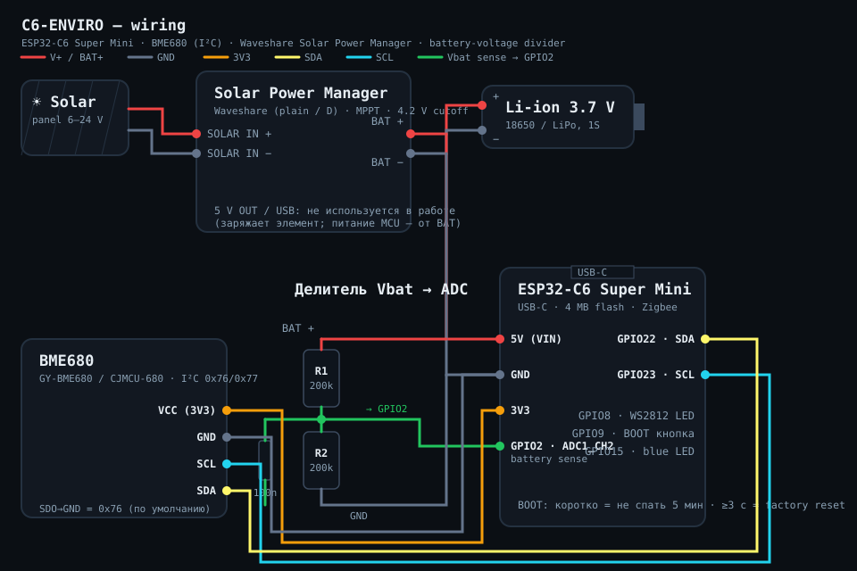

Flash your C6 Enviro sensor
This installs the firmware for an ESP32-C6 Super Mini wired to a BME680 environment sensor and powered by a Waveshare Solar Power Manager + Li-ion cell. Every 3 seconds (configurable 3 s…1 h from Home Assistant) it wakes from deep sleep, measures temperature · humidity · pressure · gas resistance · battery voltage, reports everything to HA over Zigbee2MQTT, and goes back to sleep.
Flashing happens entirely in your browser over USB — nothing is uploaded anywhere and no credentials are baked in (the device pairs over Zigbee). Wiring: diagram below · live boot log: serial console.
Install firmware
Plug the ESP32-C6 Super Mini into a USB port with a data cable, then press Connect & Flash and pick the device's serial port when prompted.
Advanced options
The C6 uses native USB-Serial/JTAG, where baud is virtual — leave the speed at 115200
unless you are flashing through an external UART adapter. Routine updates preserve
Zigbee zb_storage; enable erase-first only for explicit factory-new recovery.
If the port doesn't appear or connecting fails
The C6's native USB-Serial/JTAG auto-reset into the bootloader is sometimes flaky. Force download mode by hand:
- Unplug the board.
- Hold the BOOT button (GPIO9).
- Plug it back in while still holding BOOT.
- Release BOOT after about 2 seconds.
- Press Connect & Flash again at 115200 with erase-first off.
Note: once the enviro firmware is running, the device deep-sleeps between cycles and its USB port comes and goes — that is normal. To flash again, use the hold-BOOT procedure above (it keeps the chip awake in the bootloader).
After flashing — pairing (order matters for a sleepy device)
- Install the Z2M converter first:
z2m/biometal_enviro.mjs+z2m/lib/intoexternal_converters/, enableadvanced.enable_external_js: true, restart Z2M. - Open Zigbee2MQTT → Permit join.
- Power (or reset) the board. It joins and — important — stays awake 5 minutes so the interview can finish. Don't cut power during this window.
- It appears as EndDevice
C6-ENVIRObyBiometalwith temperature, humidity, pressure, gas, battery and diagnostic entities.
Wake a sleeping device: press BOOT briefly (it stays awake 5 more minutes).
Re-pair on a new network: hold BOOT ≥3 s → Zigbee factory reset.
Change the 3 s cadence from HA: report_interval_s (survives reboot & power loss).
Wiring diagram
The battery feeds the Super Mini's 5V pin (its LDO happily runs from 3.0–4.2 V), the Solar Power Manager only charges the cell, and a 2×200 kΩ divider lets GPIO2 watch the battery voltage. BME680 breakout sits on I²C (any GY-BME680 / CJMCU-680, address 0x76 or 0x77 — auto-detected).

Details, part numbers and the power-budget math: docs/WIRING.md.
Battery-life note: at the default 3 s cycle the radio duty cycle dominates — fine on
solar, ~2–3 days on a bare 2000 mAh cell. Set report_interval_s ≥ 60 for
weeks-long battery-only operation.